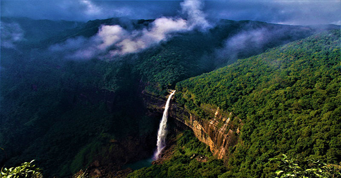

Meghalaya - City of Clouds
Meghalaya is one of the beautiful destination for travellers and tourists due the its environment and beautiful weather. Meghalaya is situated in North East of India. In Sanskrit, Meghalaya translates into 'Adobe of Clouds' and there is no doubt why it is called so. Meghalaya is surrounded by The Khasi, Jaintias and The Garo Hills. Meghalaya offers an unspoiled beauty to travellers and tourists. It has breathtaking sights of rainforests, root bridges, high waterfalls, mountain peaks under dramatic clouds, crystal clear rivers.
You can also indluge in adventurous activities like cliff jumping, caving, trekking etc.
How to Reach Meghalaya
The name 'Meghalaya' has been given due to the fact that this place recieves heavy rainfall most of the year. If you are planning to enjoy the 'adobe of clouds' and wanted to visit Meghalaya then you have three ways:-
1. By Road
Meghalaya is well connected to major cities by road. Even the road to Meghalaya is mostly smooth. Most of the travellers prefer Monsoon season for travelling to Meghalaya.
If you are thinking of going to Meghalaya during the monsoon then take precautions while driving due to heavy rain.
2. By Air
The Nearest airport to Meghalaya is Lokpriya Gopinath Bordoloi International Airport located in Guwahati (Assam) at a distance of approx 159 km from Meghalaya. The Airport is well connected to major cities like Mumbai, Delhi, Chennai and Calcutta.
There is no direct bus connection from Guwahati Airport to Meghalaya. You can hire a cab to reach Meghalaya.
3. By Train
The Nearest railway station from Meghalaya is located in Guwahati (Assam) at a distance of 180 km. If you want to reach Meghalaya by train, then you have to reach Guwahati junction. Guwahati junction is connected to New Delhi, Amritsar, Jammu & Kashmir and Bangalore. After reaching Guwahati junction, you can take bus or hire a cab to reach Meghalaya.
Places not to be Missed.
1. Shillong - Capital of Meghalaya
When the State of Assam split into Assam and Meghalaya, Shillong was declared as capital city of newly formed state of Meghalaya. It is located at an altitude of about 1500 km above sea level. The road journey from Guwahati to Shillong is mesmerizing. The Border drawn by mankind separated state of Assam on the left side and Meghalaya on the right side. Walking around this beautiful city will give you unforgottable memories.
Shillong is the home to numerous waterfalls and dense forest area. The city is similar to other cities but the freshess of air makes it unique from other cities.
2. Cherrapunji

Cherrapunji, also known as Sohra located at a distance of 56 km from Shillong. It is renowned for experiencing highest rainfall all over in the world. It is known for its double-decker living root bridge. Two Ficus Elastica trees are planted at the opposite sides of the river valley and slowly, the roots of these trees move towards each other across the river to connect the gap. Once the root connects, peoples can safely cross the river after 15 to 30 years when the roots becomes stronger. Trekking in the living root bridge is stunning.
You can also go for a long drive in this region, it will give you best memories of your life.
Meghalaya Tourism conducts tours for Cherrapunji, So that you are not aware of any place here.. Cherrapunji was said to be the wettest place on earth before Mawsynram took over. The best thing to do in Cherrapunji is Water hopping. The scenario of this place looks amazing during the monsoons.
3. Mawlynnong- The Cleanest Village
Mawlynnong lies on the border of India and Bangladesh. This village is around 80 km from Shillong. Mawlynnong is declared as the cleanest village in whole Asia with each corner having a bamboo dustbin to ensure cleanliness. You can find living root bridges in this village too. Like Cherrapunji, Meghalaya Tourism conducts tours to Mawlynnong as well.
With greenary all around and blooming orchids and flowers, Mawlynnong looks amazing.
4. Mawsynram - The Wettest Place
Mawsynram is currently "The Wettest Place" in the world after beating its neighour 'Cherrapunji'. It recieves an average annual rainfall of 11,872 mm. It is located around 60 kms from Shillong. Travellers can see high waterfalls, amazing caves after reaching Mawsynram. The caves are the key attraction of this place.
5. Tura
Tura is located at the foothills of Tura foothills and right below the Tura peak. Situated deep in the heart of the forests and mountains of Meghalaya. Tura offers natural luxuries and scenic beauties which are unique throughout the country. It enjoys wonderfully cool wheather throughout the year at an average elevation of 349 m.
The ideal season to visit Tura is the summer season which is from March to June.
Tura is heaven for adventure lovers as it has number of beautiful waterfalls and famous tourist spots.